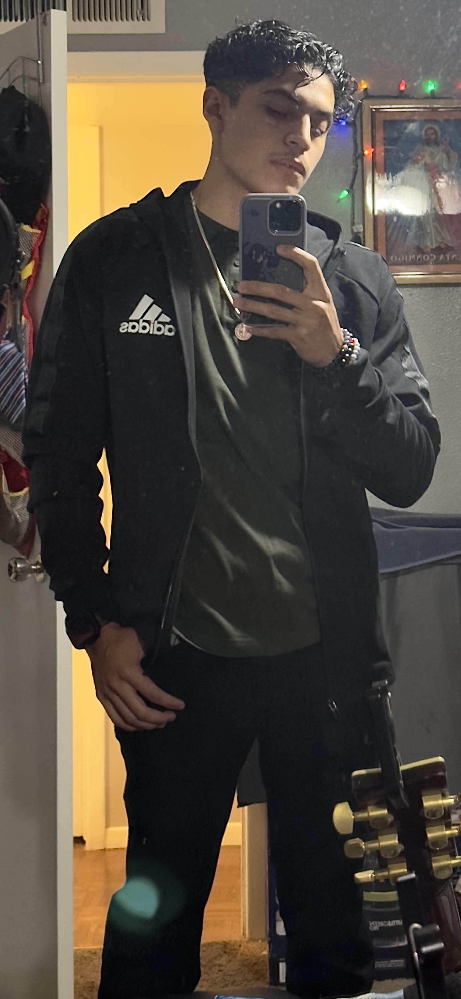

I am creating this page as a learning experience, with lots to add as I learn more about developing my own website.
Brandon Ortega

A little about me, I'm adventours I like to experince new thing sometimes, I dont like change but I can confeindtly say that it has helped me grow as a better person. I grew up in Arizona but i also live in Cali Long Beach for a few yaers. Cali was a great place but Arizona is where I have most of my family.Im also quiet, a little too quiet some might say but when I get out of that comfort zone I am great person to hang around with.I work at PHX6 as a PA (Process Assiatant) for Outbound Dock.
I took this class because I like the world of technology and want to expand my knowledge and experice what the world of Software Development has. My hobbies are Play games, sports, cars, and listening to music. I enjoy outdoor activities like hiking and running. I also like to watch anime with my girlfriend even though she just sits on her phone, and cook.
How I started my journey with the world of web development, I've always been intrigued with how websites worked and I have been wanting to build my own. I like working with computers and other sorts of technology. I took Correlaion 1 course as a learning experince and an opportunity to adventure this world. As the days goes by technology is always advancing.
My plan after the course is finished is to become an intern or in hopes become a fulltime deveolper and learn as much as possible.